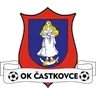

A-mužstvo
IV. liga – Majstrovstvá regiónu · 2. miesto z 16

- 12výhier
- 5remíz
- 2prehier
- 45:21skóre
Strelci
- 1Daniel Martinka10
- 2Dušan Stano7
- 3Jakub Krč7
- 4Denis Horník6
- 5Sebastian Nagy4
- 6Šimon Dibala3
Program
-
6. 3.so
 FC Patadoma · 16. kolo
14:30
FC Patadoma · 16. kolo
14:30
-
14. 3.ne
 TJ Imeľvonku · 17. kolo
14:30
TJ Imeľvonku · 17. kolo
14:30
-
20. 3.so
 AFC Nové Mesto nad Váhomdoma · 18. kolo
15:00
AFC Nové Mesto nad Váhomdoma · 18. kolo
15:00
-
27. 3.so
 FC Nitra Bvonku · 19. kolo
15:00
FC Nitra Bvonku · 19. kolo
15:00
-
3. 4.so
 FC Topoľčanydoma · 20. kolo
16:00
FC Topoľčanydoma · 20. kolo
16:00
-
10. 4.so
 OFK Trebaticevonku · 21. kolo
16:00
OFK Trebaticevonku · 21. kolo
16:00
-
17. 4.so
 OFK Dynamo Malženice Bdoma · 22. kolo
16:30
OFK Dynamo Malženice Bdoma · 22. kolo
16:30
- 24. 4.so Mestský futbalový klub Gbelydoma · 23. kolo 16:30
-
1. 5.so
 FK Slovan Levicevonku · 24. kolo
17:00
FK Slovan Levicevonku · 24. kolo
17:00
-
8. 5.so
 ŠPORTOVÉ KLUBY BLAVA 1928doma · 25. kolo
17:00
ŠPORTOVÉ KLUBY BLAVA 1928doma · 25. kolo
17:00
-
15. 5.so
 FK Spartak Dubnica nad Váhomvonku · 26. kolo
17:00
FK Spartak Dubnica nad Váhomvonku · 26. kolo
17:00
-
22. 5.so
 PFK Piešťanydoma · 27. kolo
17:00
PFK Piešťanydoma · 27. kolo
17:00
- 29. 5.so OŠK Trenčianske Stankovcevonku · 28. kolo 17:00
-
5. 6.so
 FK Junior Kaniankadoma · 29. kolo
17:00
FK Junior Kaniankadoma · 29. kolo
17:00
-
12. 6.so
 ŠK Šoporňavonku · 30. kolo
17:00
ŠK Šoporňavonku · 30. kolo
17:00
Výsledky
-
14. 11.so
ŠK Šoporňadoma · 15. kolo
Remíza 2:2
-
7. 11.so
FK Junior Kaniankavonku · 14. kolo
Výhra 0:3
-
4. 11.st
 MFK Skalicadoma · Slovnaft Cup
Prehra 1:3
MFK Skalicadoma · Slovnaft Cup
Prehra 1:3
- 31. 10.so OŠK Trenčianske Stankovcedoma · 13. kolo Výhra 3:1
-
24. 10.so
PFK Piešťanyvonku · 12. kolo
Remíza 2:2
-
17. 10.so
FK Spartak Dubnica nad Váhomdoma · 11. kolo
Výhra 5:1
-
14. 10.st
 MŠK Námestovodoma · Slovnaft Cup
Výhra 2:1
MŠK Námestovodoma · Slovnaft Cup
Výhra 2:1
-
10. 10.so
ŠPORTOVÉ KLUBY BLAVA 1928vonku · 10. kolo
Výhra 1:4
-
3. 10.so
FK Slovan Levicedoma · 9. kolo
Výhra 3:0
- 26. 9.so Mestský futbalový klub Gbelyvonku · 8. kolo Remíza 0:0
-
20. 9.ne
OFK Dynamo Malženice Bvonku · 7. kolo
Prehra 3:1
-
12. 9.so
OFK Trebaticedoma · 6. kolo
Výhra 3:1
-
5. 9.so
FC Topoľčanyvonku · 5. kolo
Remíza 2:2
-
2. 9.st
ŠK Šoporňadoma · Slovnaft Cup
Výhra 3:1
-
29. 8.so
FC Nitra Bdoma · 4. kolo
Výhra 3:0
-
22. 8.so
AFC Nové Mesto nad Váhomvonku · 3. kolo
Výhra 0:2
- 19. 8.st
OFK Trebaticevonku · Slovnaft Cup
–
-
15. 8.so
TJ Imeľdoma · 2. kolo
Výhra 4:2
-
9. 8.ne
FC Patavonku · 1. kolo
Remíza 0:0
-
1. 8.so

OK Častkovcedoma · Slovnaft Cup Výhra 2:1
Tabuľka
IV. liga – Majstrovstvá regiónu
| Poradie | Tím | Z | V | R | P | Skóre | B |
|---|---|---|---|---|---|---|---|
| 1 | 15 | 11 | 2 | 2 | 37:11 | 35 | |
| 2 | 15 | 9 | 5 | 1 | 37:15 | 32 | |
| 3 | 15 | 9 | 3 | 3 | 21:11 | 30 | |
| 4 | OŠK Trenčianske Stankovce | 15 | 8 | 2 | 5 | 32:28 | 26 |
| 5 | 15 | 7 | 4 | 4 | 29:19 | 25 | |
| 6 | 15 | 6 | 5 | 4 | 22:16 | 23 | |
| 7 | 15 | 6 | 4 | 5 | 26:24 | 22 | |
| 8 | 15 | 7 | 0 | 8 | 23:20 | 21 | |
| 9 | 15 | 5 | 5 | 5 | 23:24 | 20 | |
| 10 | 15 | 6 | 1 | 8 | 26:28 | 19 | |
| 11 | 15 | 5 | 4 | 6 | 22:19 | 19 | |
| 12 | 15 | 5 | 3 | 7 | 19:26 | 18 | |
| 13 | Mestský futbalový klub Gbely | 15 | 5 | 2 | 8 | 19:25 | 17 |
| 14 | 15 | 3 | 3 | 9 | 12:29 | 12 | |
| 15 | 15 | 2 | 3 | 10 | 18:45 | 9 | |
| 16 | 15 | 3 | 0 | 12 | 20:46 | 9 |
Súpiska
Hráči, ktorí v roku 2026 nastúpili alebo boli v nominácii (Sportnet).
Brankári
- Kristián Lančarič, číslo 99
- Štefan Matejkovič, číslo 91
- Bruno Ondruš, číslo 1
Obrancovia
- Tomáš Hlavna, číslo 28
- Denis Horník, číslo 5
- Boris Juhás, číslo 3
- Alex Karhan, číslo 21
- Jakub Krchnár, číslo 16
- Peter Líška, číslo 17
- Dušan Stano, číslo 37
Stredopoliari
- Peter Brestovanský, číslo 14
- Šimon Dibala, číslo 12
- Adam Konečný, číslo 55
- Peter Kozák, číslo 23
- Jakub Krč C, číslo 7
- Sebastian Nagy, číslo 19
- Oliver Strečanský, číslo 77
Útočníci
- Daniel Bogdalík, číslo 97
- Viktor Bujzaš, číslo 27
- Kristián Dadík, číslo 11
- Daniel Martinka, číslo 8
- Viktor Radványi, číslo 10
Realizačný tím
- TrénerLukáš Vido
- Asistent tréneraFilip Tomovič
- Vedúci mužstvaHenrich Trník
- Vedúci mužstvaJozef Demovič
- Vedúci mužstvaMiroslav Buček
- MasérkaKristína Kurkova